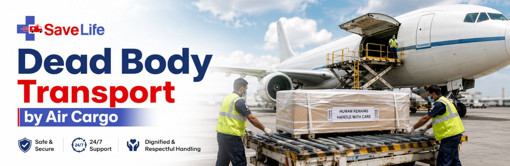

When a loved one needs to come home, Save Life Wellness arranges the complete air transport of mortal remains across India — documentation, embalming, coffin sealing, airline cargo booking, and a coordinator waiting at the receiving airport. One call sets everything in motion.
Road transport isn't always possible or dignified. Air cargo is usually the better option when:
For shorter distances, road or rail can still be the simpler choice:
| Mode | Best For | Typical Time |
|---|---|---|
| Road (Freezer Ambulance) | Distances under roughly 500–800 km | Same day to overnight |
| Train | Mid-range distances with a direct route and no urgency | 1–2 days |
| Air cargo | Long distance, inter-state, or time-critical rites | 24–48 hours, door to door |
This is the actual sequence our coordinators follow. You won't need to manage it — we're listing it so you know exactly what to expect at each stage. Every case is booked through the airline's cargo desk under the human-remains code “HUM”; it is not an air-ambulance service, which keeps the process faster and considerably less expensive.
Airlines are strict about this — one missing paper can delay a flight. We assemble all of it for you; here's what goes into the folder.
| Document | What it's for | Who issues it |
|---|---|---|
| Death certificate | Primary legal proof of death | Doctor / municipal authority |
| Police NOC | Clearance for transport, especially inter-state or non-natural deaths | Local police station |
| Embalming certificate | Confirms the body has been safely preserved for travel | Licensed embalmer |
| Coffin sealing certificate | Confirms the coffin is airtight and flight-ready | Undertaker / mortuary |
| ID proofs | Verifies both the deceased and the person receiving the body | Government ID authority |
| Air Waybill | Tracks the shipment and releases it at destination | Airline cargo office |
For international repatriation, additional papers are needed — most importantly a No-Objection Certificate from the Indian Embassy or Consulate in the country of death, plus any health clearances the destination country requires. Call us and we'll tell you exactly what applies to your case.
Airlines handle cremated and non-cremated remains differently. Here's what each route involves.
The dead body transport by air cost depends on distance, the deceased's weight, and the airline used, but here's a realistic range so you can plan without surprises. This dead body transport by air cost in India estimate covers every stage, from embalming to the final cargo charge:
| Component | Typical Range |
|---|---|
| Airline cargo charge | ₹20 – ₹30 per kg |
| Embalming | ₹5,000 – ₹15,000 |
| Coffin | ₹10,000 – ₹25,000 |
| Freezer ambulance / hearse (per trip) | ₹2,000 – ₹5,000 |
| Documentation & coordination | ₹5,000 – ₹10,000 |
| Typical total, most domestic routes | ₹22,000 – ₹55,000 |
IndiGo dead body transport charges and Air India dead body charges are the two most-searched airline-specific costs, and both price human remains cargo largely by weight and distance, within the same broad per-kg range shown above — exact figures are confirmed by the cargo desk at the time of booking, since they shift with route and fuel surcharges. We check both before confirming your flight, so you're never quoted a number we haven't verified.
Most domestic cases are completed within 24–48 hours once documents are in hand; if cremation happens first, ashes can often travel in 12–24 hours. Call us for an exact quote on your route — we'll confirm cargo space before you book any passenger tickets.
Where death resulted from certain notifiable infectious diseases such as yellow fever, plague, anthrax, or glanders, remains can only be flown as cremated ashes in a sealed urn — not as a body. This does not apply to deaths from Hepatitis B, Hepatitis C, or HIV, which airlines will still carry as a body under normal embalming procedure. If the case involves an infectious disease, tell us at the first call — we'll confirm exactly what the destination airport and health authority require before you make any other arrangements.
Cargo space is limited on every flight. If it hasn't been confirmed, a family can be left holding a plane ticket with nowhere to put the coffin. Confirm cargo space before booking any passenger travel.
Human remains cannot go as checked or cabin baggage under any circumstance. It must be booked as registered air cargo, declared clearly on the paperwork.
A single missing certificate can delay a flight by a full day. Keep originals and photocopies together, and share a scanned copy with the receiver in advance.
The cargo terminal at the receiving end requires a named person with ID and the Air Waybill. Decide who that will be, and have local transport arranged before the flight lands
We route flights and handle cargo formalities to and from cities across India, including Patna, Delhi NCR, Mumbai, Bengaluru, Kolkata, Hyderabad, Chennai, Pune, Lucknow, Ranchi, Muzaffarpur, Bhagalpur, Darbhanga, Bhubaneswar, Ahmedabad, Nagpur, Indore, and Amritsar.
A coordinator picks up any hour of the day and starts working immediately on hospital, police, and cargo steps.
We know exactly which certificate each airline and state asks for, so nothing is missed and nothing is duplicated.
Licensed embalmers and airline-compliant coffins, arranged quickly without compromising on dignity.
We stay in contact with the receiving family, guide them through the cargo terminal, and can connect them to local funeral services on arrival.
It's the formal process of moving a deceased person from the place of death to another city or country using an aircraft's cargo hold, rather than passenger baggage. It requires embalming, a sealed coffin or urn, and a set of legal certificates, and it's booked through the airline's cargo division under the human-remains code “HUM.” Professional coordinators like Save Life Wellness typically manage the whole chain rather than families approaching each office separately.
You book the deceased as HUM cargo with a domestic carrier's cargo division — Air India, IndiGo, Vistara, and SpiceJet all accept this. The core requirements are a death certificate, embalming certificate, sealed coffin, and — for inter-state or unnatural-death cases — a police NOC. We handle this booking and the document trail for you end to end.
A commercial flight is enough for almost every case. The coffin travels in the cargo hold of a standard passenger or freighter aircraft, not in the cabin. Air ambulances are only needed when a living patient requires in-flight medical care — they're not part of mortal-remains transport, and skipping that option keeps costs and turnaround times down.
In short: death certificate, police NOC where applicable, embalming, sealing in an airline-compliant coffin, cargo booking with the airline, and collection by a named receiver at the destination using the Air Waybill. See the eight-step breakdown earlier in this guide for the full sequence.
Yes, both travel routinely as air cargo. A coffined body goes in a hermetically sealed casket inside an outer coffin; cremated remains go in a sealed urn cushioned in a protective carton. Airlines are barred from mixing either shipment with unrelated freight.
An embalmed body typically reaches its destination within 24–48 hours of documentation starting. If the family chooses cremation first, ashes can often move faster — within 12–24 hours — sometimes even as carry-on rather than checked cargo.
Road works well under roughly 500–800 km with a freezer ambulance. Train suits mid-range distances when there's a direct route and no urgency. Flight is the right call for long distances, inter-state moves, or when the rites are time-critical — it's usually the fastest door-to-door option beyond a few hundred kilometres.
Families generally choose between bringing the body home by road or air, holding the cremation or burial at the place of death, or arranging a direct burial at the destination. A funeral logistics coordinator can lay out which option fits your timeline and budget before you decide.
You'll need to involve the Indian Embassy or Consulate in the country of death to get a No-Objection Certificate, alongside professional embalming, a sealed casket, an official death certificate, and air cargo clearance. This is the repatriation process, and it typically takes longer than a domestic move because of the embassy step.
It's the term for transporting a person's body or ashes back to their home country after a death abroad. It covers the legal permits, embalming, embassy coordination, and the actual air or ground shipment needed so the family can hold final rites at home.
No. Human remains must travel as registered cargo under airline and public health rules — they cannot be booked as passenger baggage, checked or cabin.
Often, yes. Many airlines permit a sealed urn as carry-on baggage as long as the material — wood, plastic, or cardboard rather than metal or lead-lined ceramic — passes cleanly through X-ray screening. Security will not open a sealed urn for inspection.
For certain notifiable diseases, only cremated ashes in a sealed urn can be flown, not the body. Deaths from Hepatitis B, Hepatitis C, or HIV do not fall under this restriction and the body can still be carried after standard embalming. Tell our coordinator the cause of death at the first call so we can confirm the correct route.
The airline will hold the shipment at the cargo terminal but will not release it without the pre-designated receiver presenting valid ID and the Air Waybill. It's worth confirming this person and their travel plans before the flight is even booked.
Most major Indian carriers, including Air India, IndiGo, Vistara, and SpiceJet, accept human remains as registered air cargo under the HUM booking category, subject to documentation and available cargo space on the chosen flight. We check availability with the cargo desk before confirming your booking.
Speak with a Save Life Wellness coordinator now. We'll start on the paperwork, the ambulance, and the cargo booking while you stay with your family. Call +91 98353 09230.